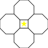

Ever played minesweeper and thought "I like this, but there's just too many damn squares in this game! Also, it's not weather themed!"? No? Well, either way, this problem has a solution: RainSweeper! At the moment, the RainSweeper site has several modes, including, but not limited to:
Imagine: you just got your dream job, working for the met office, but oh no! You just accidentally rm -rf'ed the whole database! Now there's a huge group of clouds headed straight for the UK, and no-one knows which of them are rainclouds and which are not! Looks like the only way out for you is to guess which clouds are rainclouds. Thankfully, these clouds follow a nice pattern: if you guess that a cloud is not a raincloud and are right, that cloud will show you how many of the clouds next to it are rainclouds! You have a chance!
Clouds are neighbours if they share any corners in common, so in the two examples below, the square with the gold star has 4 neighbours, while the triangle with the gold star has 12!
Controls:
You can find the code (or at least a more readable version of it!) on my GitHub.